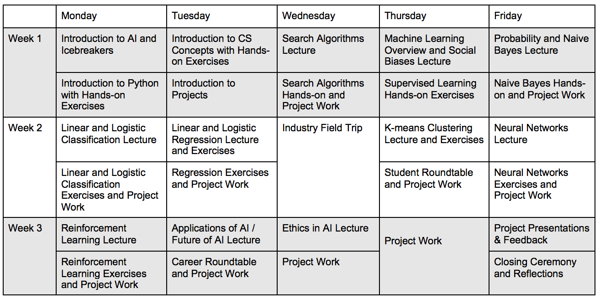

Program Overview
UCSF AI4ALL is a program promoting greater diversity and inclusion in the field of Artificial Intelligence. Our mission is to inspire tomorrow’s leaders to know, think about, and use artificial intelligence ethically. During the program, participants receive broad exposure to Artificial Intelligence topics through faculty lectures and field trips, as well as an in-depth experience with a research area through hands-on projects. Mentoring and career/personal development sessions with faculty, researchers, and graduate students further enable personal growth and an opportunity to explore career interests in Computer Science and Artificial Intelligence. We are committed to serving students of all financial backgrounds.
Who Should Apply?
{Your program target demographics here. A sample of what language Princeton uses:} The program targets current 10th graders (rising 11th graders) from racial/ethnic groups dramatically underrepresented in AI: Black, Hispanic/Latinx, and Native American. Applications from young women are particularly encouraged.Important Dates
Application Deadline: {dates here}
UCSF AI4ALL 2019 Program: June 17 - July 5
Program Location
The program will take place on the UCSF campus in San Francisco, California. Lectures and research will be conducted in the UCSF Computer Science Department. Students will be expected to commute to campus every day of the program; on-campus housing will not be provided. Transportation stipends may be provided upon request.Program Topics
AI Education and Inspiration
- Lectures by UCSF professors.
- In-depth introductions to ongoing research projects at UCSF.
- Field trips to local companies involved in AI.
Personal Growth
- Talks by eperts in career and personal development.
- Small-group mentoring sessions with AI faculty and senior AI researchers.
- Social events with UCSF AI graduate students.
Hands-on Experience
- Students will engage in a small-group research project led by AI graduate students.
- Each research project will be focused around a societal impact of AI.
- Students will give a group presentation of their work at the end of the program.
Past projects at AI4ALL programs have included how to utilize natural-language processing to aid disaster relief; using computer vision to map poverty-affected areas; writing machine-learning algorithms to detect various cancers in the human genome; and programming autonomous cars to revolutionize transportation.
Typical Daily Schedule
Please update this section with your program's daily schedule. Below is an example of what was used for the Stanford AI4ALL program website:
The weekly schedule consists of days split between lectures and demonstrations in the morning, and time to work on a hands-on AI research project with societal implications in the afternoons.
Days begin with breakfast and lectures from Stanford faculty and graduate students, followed by teaching and demostrations. During the presentations, participants engage with the day's lecturer and ask questions about their work and involvement in AI.
After lunch, participants work on their research projects that will be presented at the end of the third week. Participants work closely with Stanford graduate students, who serve as research instructors, to apply the machine learning techniques they learn to real problems and datasets and to get hands-on experience with how using AI tools can help make the world a better place.
Participants have time to interact with our residential counselors to provide mentoring and help develop personal growth. They learn how to get involved in the AI community. Over the weekend, there will be field trips, as well as panels hosted by our industry sponsors so students can learn about career opportunities in AI and how they can stay connected with the community.
Below is a sample schedule that the BU program used:
